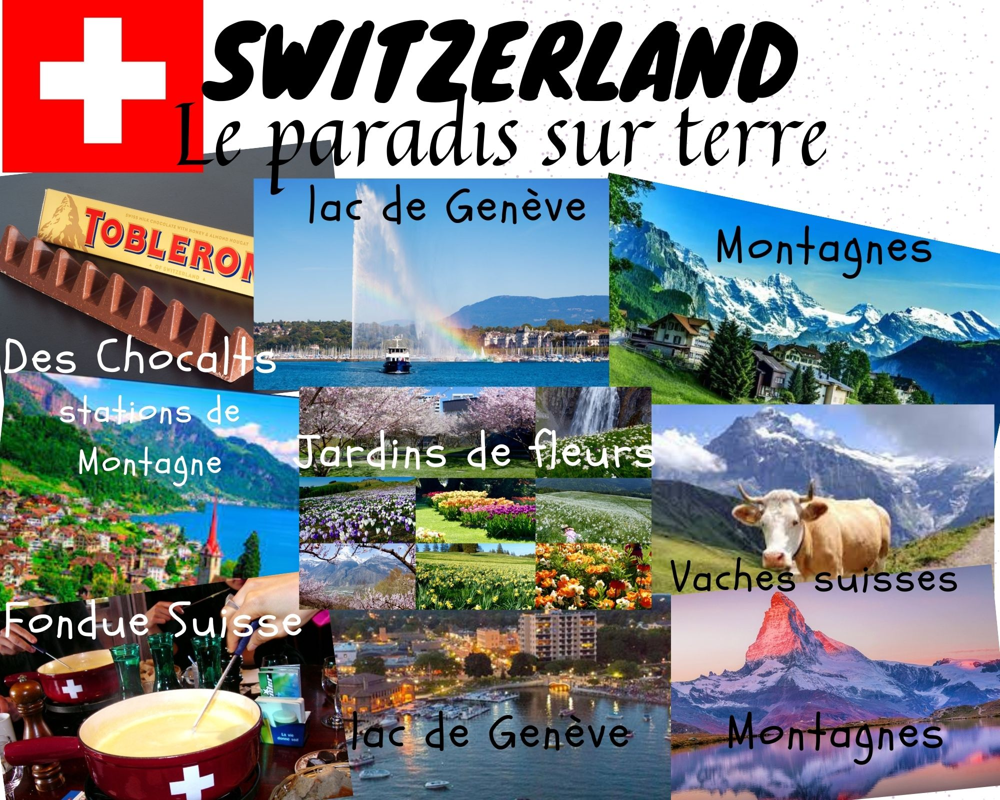

<<=Back To Home
French Holiday Homework
French Holiday Homework-
Ten countries in the world have been declared ‘Happy’ countries out of
which Luxembourg and Switzerland are Francophone or French-speaking
countries.
Prepare an E-collage on any one of these two countries.
The collage should contain pictures of all the things the country is famous for.
List out the items in the collage in French.
The collage may be made using Canva or Microsoft Publisher and should be added to the website.
Here is the collage I have made using Canva-

By- Insha Fatima 8'C'